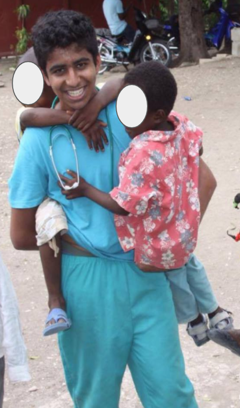

Outreach
VK's Outreach
First, I would soak their feet in warm water and disinfectant soap (Savlon). Then I would scrub the wounds with a rough sponge to get rid of dead skin and infectious scabs. Next, I would wash the wounds with DI water, and dress the wounds with Betadine (10% povidone-iodine antiseptic) and wrap the bound with gauge bandage.

Share the Love
Doctor sahib!” The old man hobbling towards the clinic beckoned to me as I ran over to sit him down in the nearest chair. I recalled my grandmother telling us about how she would often donate food and clothes to people afflicted with leprosy. However, this was my first encounter with the disease.
I tenderly uncovered his wound hoping it would just be one of the usual lesions. To my surprise, the unraveled bandage revealed a decaying black foot that oddly resembled a rotting cauliflower. The experienced volunteers quickly backed away from the putrid stench. I felt a wave of uncertainty pass over me. I had to make a pivotal decision: do I neglect this man’s debilitating condition or do I help alleviate his pain?
As I looked up to try to find an excuse to leave, our eyes met and I instantly found myself with an invigorating sense of responsibility. This poor man needed my service, and I felt impelled to care for him. Once I looked past the severity of his wounds, I began to notice that this man’s anxious eyes and I felt driven to relieve his pain. I began to wash away the dirt between the rotting flesh. As I casually glanced back up at his eyes, I witnessed something that I will never forget: a beautiful spark shining in his deep grey eyes. I began to converse with him, and the longer I talked, referring to him as “Thatha” (grandpa), the brighter this spark became. I never realized I would be able to profoundly empathize with someone like him, but I truly understood his pain without being inhibited by his physical appearance.